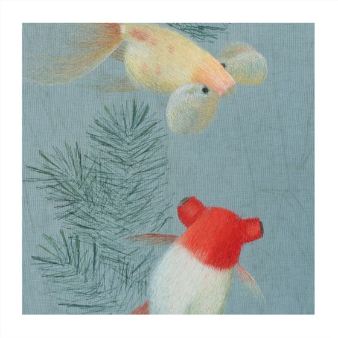
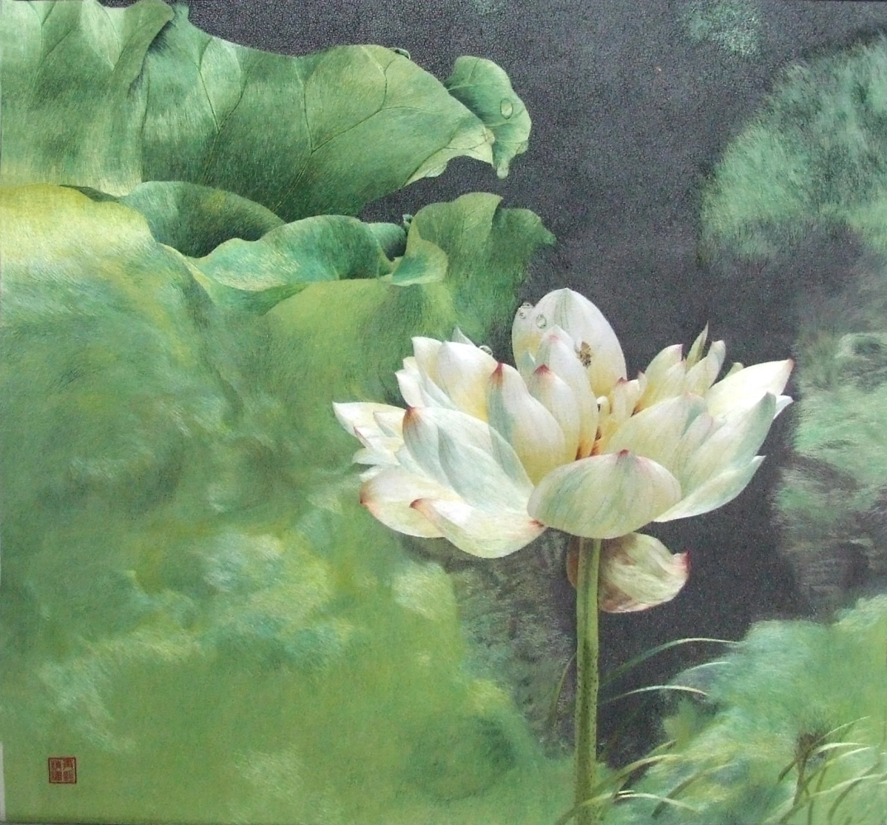
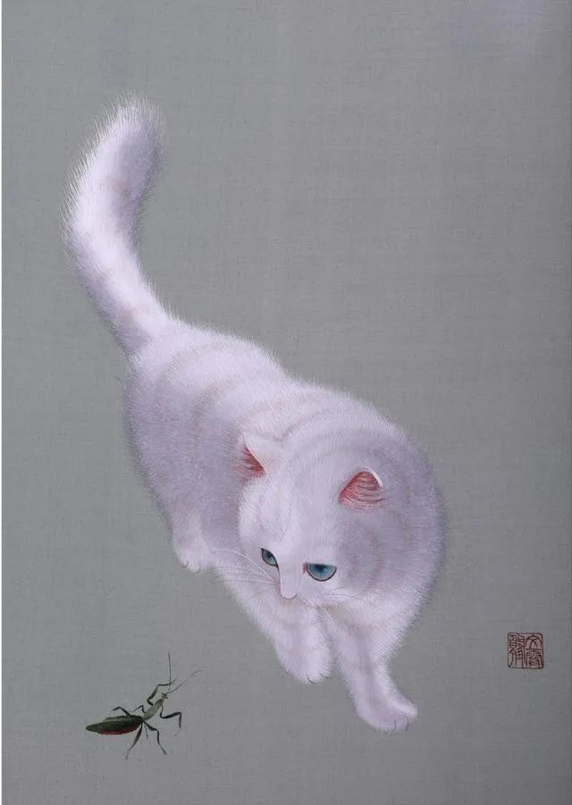

1. Suzhou embroidery
(Jiangsu) - delicate and exquisite, soft colors, superb craftsmanship, famous for double-sided embroidery.
2. Hunan embroidery
(Hunan) - focuses on three-dimensionality and layering, and is good at animal embroidery, such as tigers and lions.
3. Yue embroidery
(Guangdong) - bright colors, magnificent style, often used in costumes, home decorations, etc.
4. Shu embroidery
(Sichuan) - with various stitches and bright colors, it is often used for quilt covers, curtains, etc.